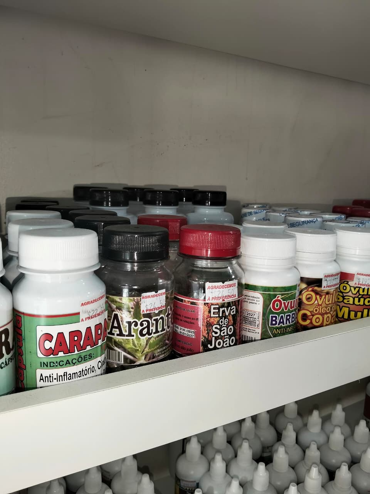
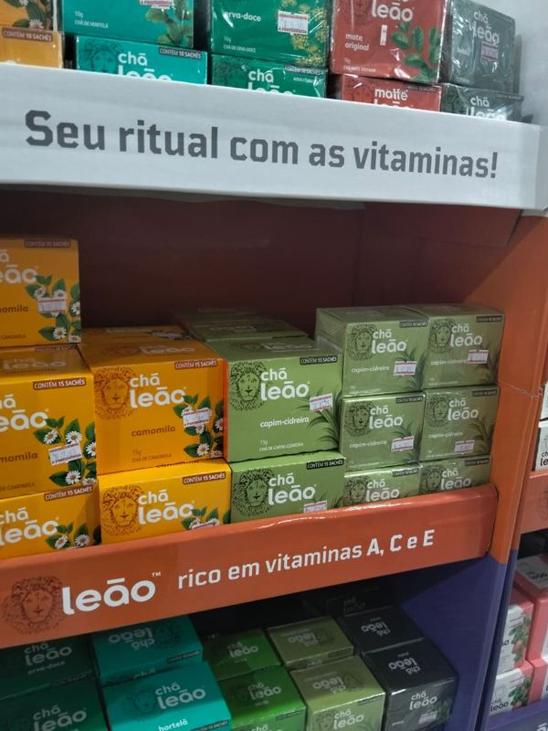
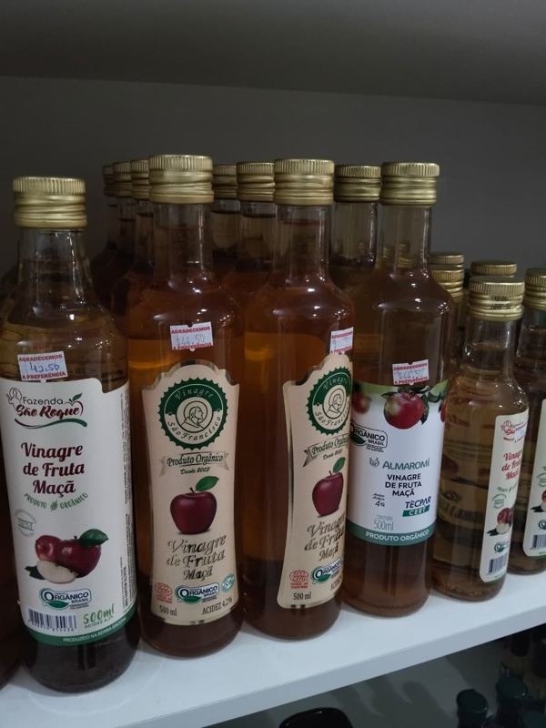
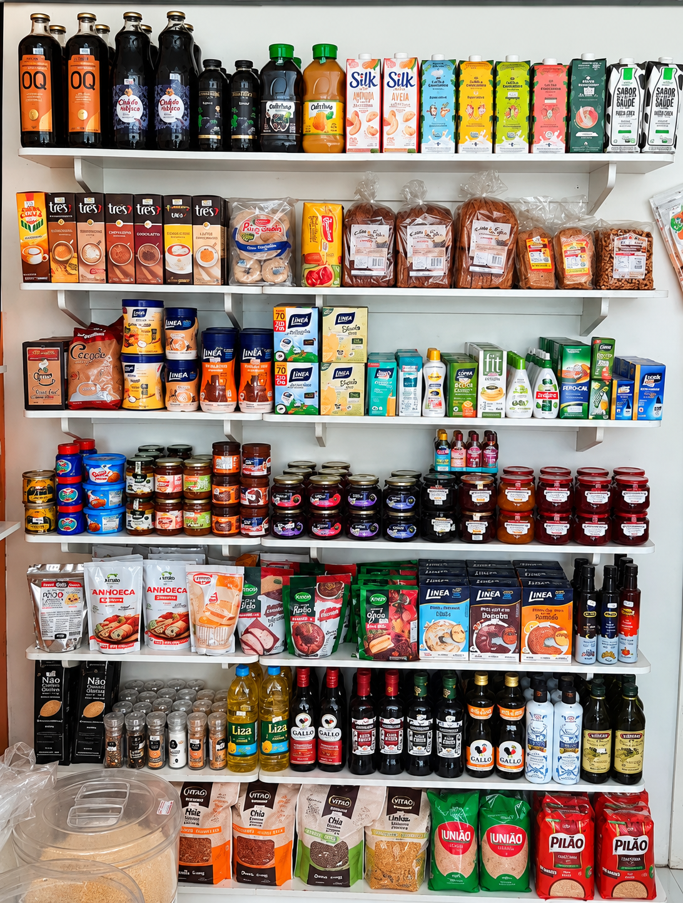

Variedade em produtos naturais e regionais.
Conheça o Empório dos Cereais e encontre diferentes opções de ervas, castanhas, farinhas, fibras, cascas e outros produtos naturais.
Variedade de produtos
Ervas, castanhas, farinhas, fibras, cascas e diversas opções de produtos naturais.
Reposição frequente
Novas mercadorias costumam chegar semanalmente ao estabelecimento.
Produtos selecionados
Cuidado na escolha, armazenamento e renovação dos produtos da loja.
Produtos naturais em Parintins.
O Empório dos Cereais nasceu da vontade de empreender em um segmento diferente no mercado local. A loja trabalha com diferentes tipos de produtos naturais e busca acompanhar as novidades do setor.
Conheça a história do Empório dos Cereais.
Um empreendimento que surgiu da vontade de explorar uma oportunidade diferente no mercado local.

Uma ideia que se transformou em empreendimento.
O Empório dos Cereais surgiu a partir da vontade de empreender e da busca por uma oportunidade diferente no mercado local.
Inicialmente, a ideia era investir em outro segmento. Após pesquisar diferentes tipos de estabelecimentos, surgiu o interesse pelo mercado de produtos naturais.
Mesmo sem experiência inicial nesse segmento, a ideia despertou interesse. Com pesquisa, dedicação e apoio familiar para o investimento, o empreendimento começou a ganhar forma.
Desde então, a busca por conhecimento sobre os produtos e as novidades do mercado passou a fazer parte da rotina do estabelecimento.
Renovação e cuidado com os produtos.
Alguns produtos naturais exigem atenção especial ao armazenamento e ao período em que permanecem no estoque.
Por isso, o Empório dos Cereais prioriza compras mais frequentes em vez de manter grandes quantidades de determinados produtos armazenadas por muito tempo.
Novas mercadorias costumam chegar semanalmente, principalmente às quintas-feiras.
Variedade da loja
Carregando produtos...Mais da nossa loja


Trabalhamos com pesagem fracionada na quantidade desejada. Adicione os itens à sua lista e finalize para consultar peso exato e disponibilidade no WhatsApp da loja.
Sempre buscando novidades para você.
O Empório dos Cereais acompanha as novidades do mercado de produtos naturais e busca renovar frequentemente as opções disponíveis na loja.
Reposição semanal
Novas mercadorias costumam chegar semanalmente ao Empório, principalmente às quintas-feiras.
Novos produtos
A loja acompanha produtos que estão ganhando espaço no mercado para ampliar a variedade oferecida aos clientes.
Acompanhe as novidades
As novidades e os produtos disponíveis também são divulgados pelas redes sociais e pelo Status do WhatsApp.

A disponibilidade pode mudar conforme a reposição e a chegada de novas mercadorias.
Visite o Empório dos Cereais.
Estamos em Parintins, Amazonas. Consulte nossa localização para encontrar o estabelecimento.
Contato
Entre em contato com o estabelecimento para consultar produtos e disponibilidade.
Redes sociais
Acompanhe os produtos e novidades divulgados pelo estabelecimento.
Empório dos Cereais
Rua Paraíba, 3000, Emílio Moreira, Parintins - AM.